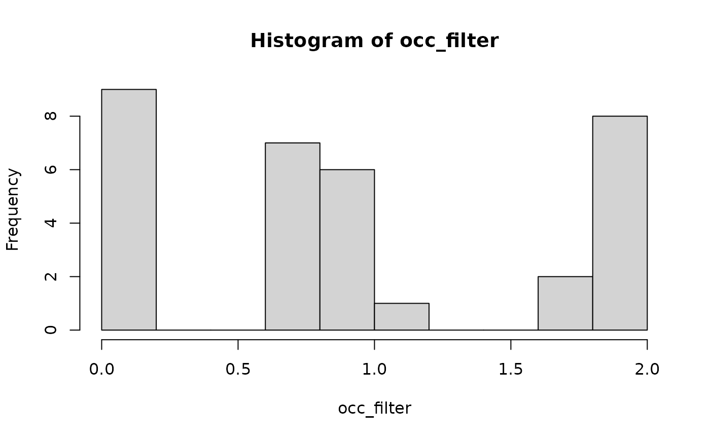

Generates a simple stratigraphic filter, meaning a function that
returns 0 if its argument coincides with a hiatus, and 1 if it does not.
Can be used for simple time-domain filtering using apply_niche or apply_taphonomy (see example)
Arguments
- adm
an age-depth model (
admobject)- ...
further parameters passed to
admtools::is_destructive
Value
a function taking as argument a vector of times and returning a vector of equal length with entries 1 if the time coincides with deposition and 0 if it coincides with a gap
See also
apply_taphonomy(), where the stratigraphic filter can be applied as gradient (see example below)
Examples
# define age-depth model from example data
adm = admtools::tp_to_adm(t = scenarioA$t_myr, h = scenarioA$h_m[,"2km"])
f = strat_filter(adm)
# collection probability of 0 at 0.5 Myr & 1 at 1.0 Myr
f(c(0.5, 1.0))
#> [1] 0 1
# define fossil occurrences
occ = p3(rate = 2, from = 0, to = 2, n = 100)
# filter those that are not coinciding with hiatuses
occ_filter = apply_taphonomy(occ, identity, f)
hist(occ_filter, breaks = seq(0, 2, by = 0.2))
